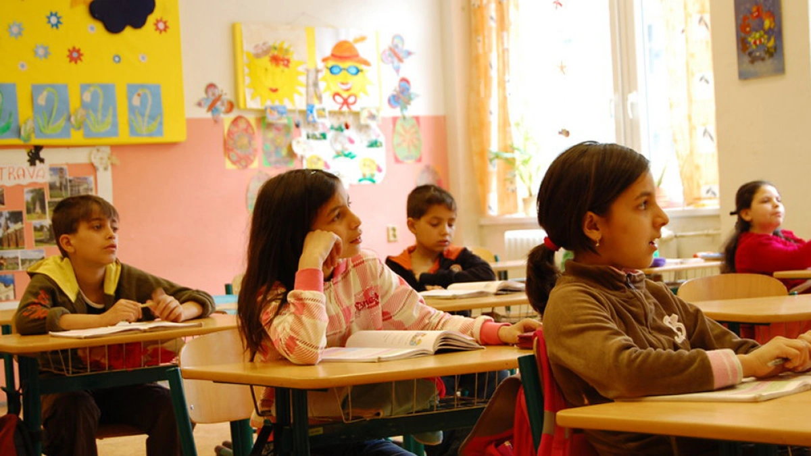

Educational Disparities of the Roma Population in Eastern Europe

Roma Children at a segregated school in Ostrava, Czech Republic [Amnesty International]
Summary
The Roma make up the largest ethnic group in Europe, with 10-12 million spread throughout Europe. Though considered citizens in their respective countries of residence, Roma children nonetheless experience many educational disparities. The impoverished circumstances of many Roma families leads to less access to foundational education services, which puts children entering the school system at a disadvantage. Once in school, unofficial segregation practices lead to further disadvantages in learning opportunities and improvement. In educational situations the government adds its own hinderances with documentational requirements and a lack of involvement in Roma inclusion practices. What results is low levels of enrollment and retention of Roma students, which leads to incomplete school experience and leaves children lacking in fundamental skills and knowledge. Poor educational achievement is a problem which hinders progression of Roma children to higher education and integration into the labor market. Effective practices for improving these disparities include ending segregation through cultural awareness and specific community by community inclusion strategies and well as ensuring high quality education by training teachers and fostering a better home and school relationship.
Contributing Factors
Poverty
Malnourishment
Continuation of the poverty cycle
Kept home to work for the family
Segregation
Language barriers
Low funded Roma dominant schools
Seperating Roma and non-Roma children in the classroom
Difficulties with the Government
Lack of official government documents
Consequences
Low Levels of Enrollment and Retention
Poor Educational Achievement
Difficult Transition to Higher Education and Integration into the Job Market
Best Practices
End segregation of Roma and non-Roma children in schools
Ensure high quality education to Roma students
Difficult Transition to Higher Education and Integration into the Job Market
Key Takeaways
Roma children experience more educational barriers and disparities than their non-Roma counter parts.
In order to facilitate true inclusion of the Roma population into society and labor markets alike, Roma children need access to quality education.
Specialized and individualized involvement implemented country by country will be needed in order to end effectively remove all forms of educational segregation.
Improving classroom conditions with more trained teachers and involving parents and adult Roma examples in the education process help Roma children to succeed.
Prevalent factors such as poverty, segregation, and governmental problems in Roma communities lead to poor educational achievement, low school retention, and difficult future work and school transitions for Roma children.
Watch this video to learn more about Roma children's stuggle for education: